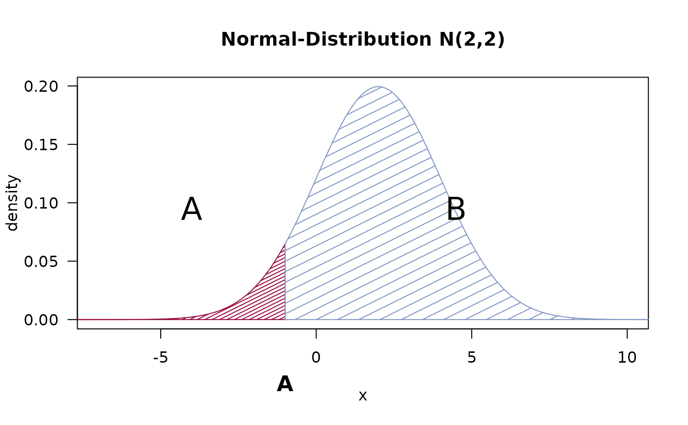

PlotProbDist.RdProduce a plot from a probability distribution with shaded areas. This is often needed in theory texts for classes in statistics.
PlotProbDist(breaks, FUN,
blab = NULL, main = "", xlim = NULL, col = NULL, density = 7,
alab = LETTERS[1:(length(breaks) - 1)],
alab_x = NULL, alab_y = NULL, ylab = "density", ...)a numeric vector containing the breaks of different areas. The start and end must not be infinity.
the (typically) distribution function
text for labelling the breaks
main title for the plot
the x-limits for the plot
the color for the shaded areas
the density for the shaded areas
the labels for areas
the x-coord for the area labels
the y-coord for the area labels, if left to default they will be placed in the middle of the plot
the label for they y-axis
further parameters passed to internally used function curve()
The function sets up a two-step plot procedure based on curve() and Shade() with additional labelling for convenience.
nothing returned
# plot t-distribution
PlotProbDist(breaks=c(-6, -2.3, 1.5, 6),
function(x) dt(x, df=8),
blab=c("A","B"), xlim=c(-4,4), alab=NA,
main="t-Distribution (df=8)",
col=c(DescTools::hred, DescTools::hblue, DescTools::horange),
density=c(20, 7))
# Normal
PlotProbDist(breaks=c(-10, -1, 12),
function(x) dnorm(x, mean=2, sd=2),
blab="A", xlim=c(-7,10),
main="Normal-Distribution N(2,2)",
col=c(DescTools::hred, DescTools::hblue), density=c(20, 7))

# same for Chi-square
PlotProbDist(breaks=c(0, 15, 35),
function(x) dchisq(x, df=8),
blab="B", xlim=c(0, 30),
main=expression(paste(chi^2-Distribution, " (df=8)")),
col=c(DescTools::hblue, DescTools::hred), density=c(0, 20))